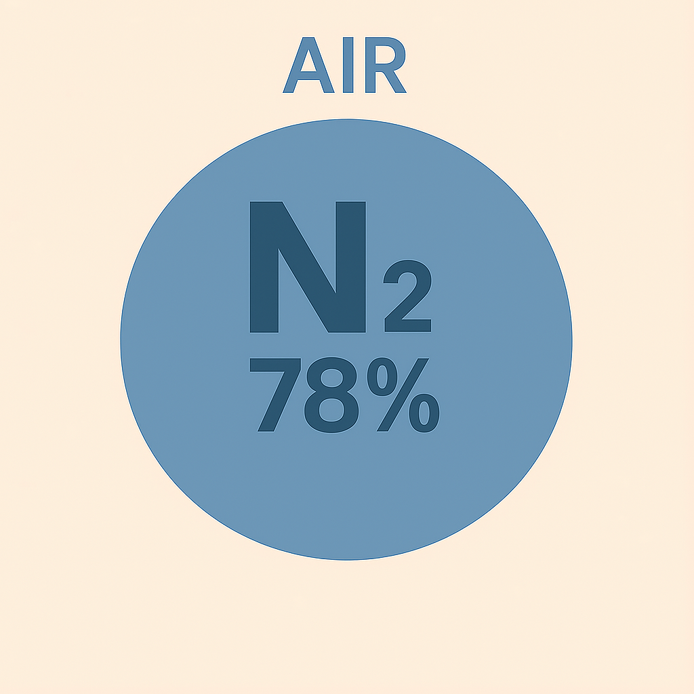
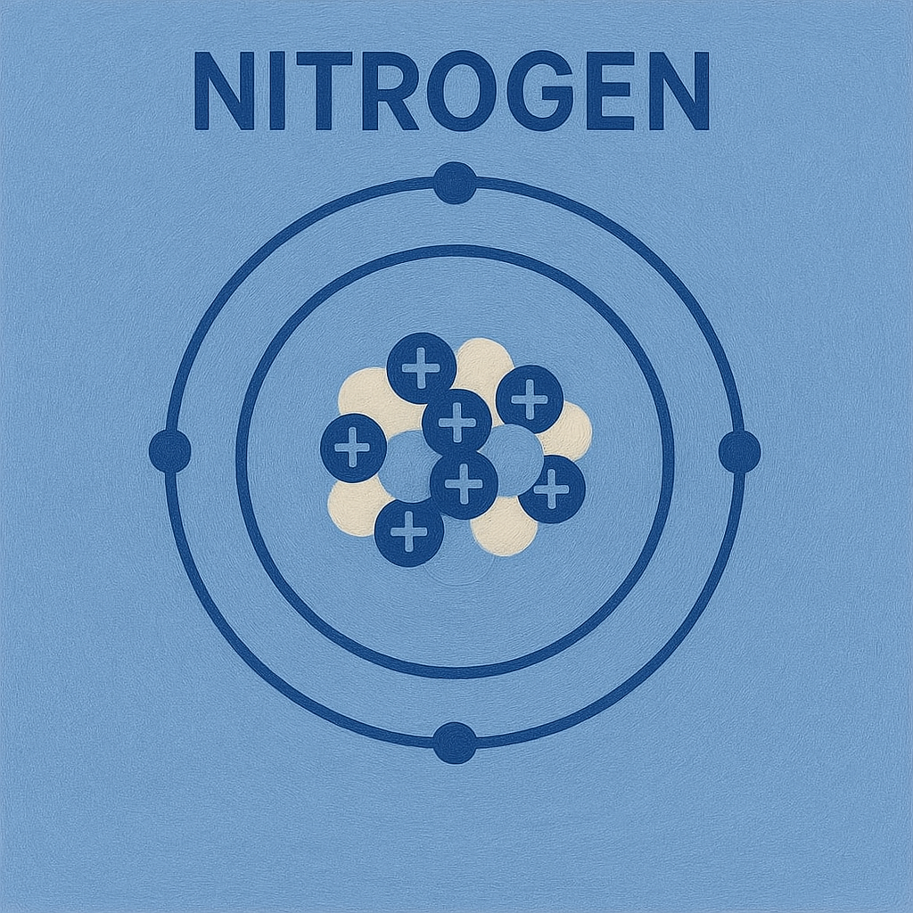

Curiosidades sobre el Nitrógeno
🌠Presencia Natural y Descubrimiento
1. ¡Está en todas partes!
El nitrógeno compone el 78% del aire.
2. Tiene muchos nombres históricos
Antes se le conocÃa como “aire quemado †o "azote", que significa "sin vida"​​.

🧬 Rol en la Vida y la Naturaleza
3. Es esencial para la vida
Forma parte del ADN y proteÃnas.

4. Las plantas lo “comen†gracias a bacterias
Necesitan bacterias para convertirlo en formas utilizables.

âš ï¸ Propiedades y Riesgos
5. El nitrógeno lÃquido es ultrafrÃo
Temperatura de -196 °C. Congela instantáneamente.

6. También puede ser peligroso
Puede causar asfixia silenciosa en atmósferas sin oxÃgeno.

7. Puede hacer que las cosas “crujan†de frÃo
Frágiles al contacto tras sumergirse en nitrógeno lÃquido.

💥 Usos Explosivos y Ambientales
8. Forma parte de los explosivos
Se encuentra en TNT, nitroglicerina, etc.
9. Parte de la lluvia ácida
Óxidos de nitrógeno contribuyen a este fenómeno ambiental.

10. Forma parte de los fuegos artificiales
Se usa en pirotecnia.

⚙️ Aplicaciones Tecnológicas
11. Usado en chips y componentes electrónicos
Como gas inerte en su fabricación.

12. Usado para inflar llantas de aviones y autos de carrera
Más estable que el aire común.

13. Usado en empaques de alimentos
Protege snacks al evitar la oxidación.
☕🺠Usos Gastronómicos
14. Importante para la cerveza y el café
Usado para crear textura suave y cremosa.
15. Se usa en medicina y gastronomÃa
Para congelar alimentos o tejidos casi al instante.

🪠Presencia Extraterrestre y Curiosidades
16. El nitrógeno está en otros planetas
Titán, luna de Saturno, tiene una atmósfera rica en nitrógeno.

17. ¡El nitrógeno también está en los diamantes!
Impurezas que alteran el color del diamante.